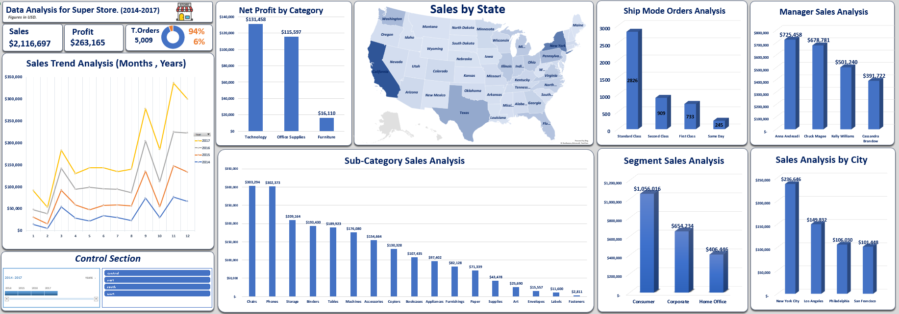
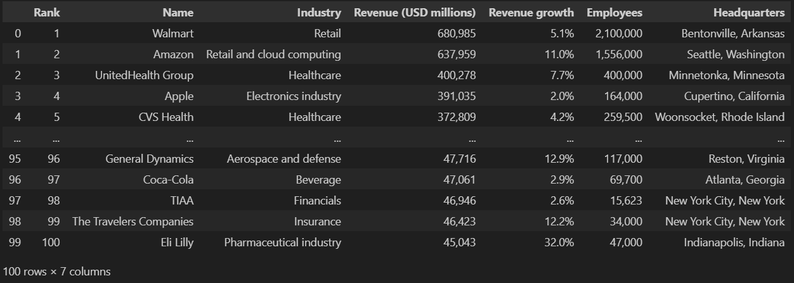
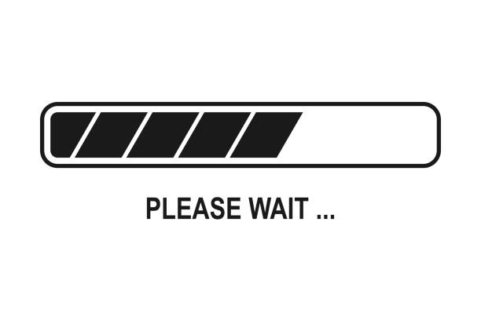

B.Sc. of Computer and Control Systems Engineering (2020 – 2025).
• Faculty of Engineering – Kafr El Shaikh University.
• Graduation Project: Vehicle Remote Diagnostics System.
• Description: Designed and implemented a Battery Management System (BMS)
for
electric vehicles, focusing on error detection, system monitoring, and safety
improvements.
• Graduation project grade: Excellent.
Technical Skills
• Programming: C/C++, Python, SQL (queries, filtering, joins, etc).
• Data Structures & Algorithms: Arrays, Linked Lists, Sorting, Searching,
Stack, etc.
• Data Analytics: Data Cleaning & Visualization using (Excel, Sql,
Python).
• Version Control: Git, GitHub.
• DEPI Program (6 Months) – Data Analysis Specialist Track:
• (July 2025 – Present).
• Currently enrolled in a comprehensive 6-month program covering data analysis
fundamentals using Python, SQL, Excel, Tableau, and Power BI.
• Analyzed 50K+ rows of raw data using SQL and Excel, performed data cleaning with
100% error removal, and built 2 interactive dashboards in Excel to present insights,
improving data-driven decision-making.

Performed end-to-end analysis of the Superstore dataset using Microsoft Excel. Conducted data
cleaning, applied pivot tables and advanced formulas, and developed a fully dynamic,
interactive
dashboard to uncover sales trends, regional performance, and product profitability, turning raw
data
into actionable business insights.

I cleaned a global layoffs dataset using SQL to prepare it for analysis. The raw data contained
duplicates, missing values, inconsistent entries, and irrelevant fields. Through SQL queries, I
transformed it into a structured and reliable dataset.
After cleaning the dataset, I performed exploratory data analysis (EDA) using SQL to uncover key
trends and insights in global layoffs. The analysis provided a structured view of how layoffs
varied across industries, companies, and regions.

Scraped real-world data from Wikipedia using Python (BeautifulSoup & Requests).
Extracted details
such as company rank, revenue, growth, employees, and headquarters. Cleaned and organized the
dataset in Pandas and exported it to CSV for further analysis and visualization.

------------------------------------------------------
------------------------------------------------------